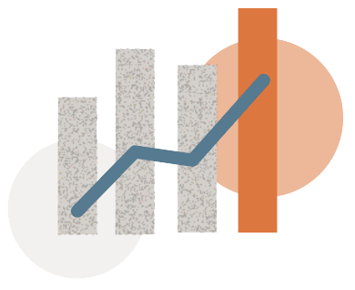
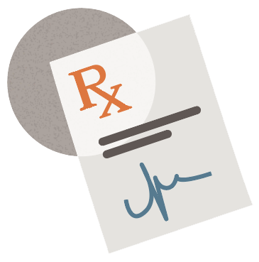

Production

Research and development
Two promising drugs but delayed studies of one
As Gilead worked on developing Truvada, it also conducted clinical trials on a modified version, which would later become Descovy. However, it delayed further investigation on this new product, despite previous demonstrations on its success.5 While Truvada was on the market, the company also applied for patent protections for the new product, which positioned Gilead to begin selling Descovy right ahead of when the company expected generic competitors of Truvada.
Research and development
“Product hopping” is used to maintain market share
In 2019, Gilead launched Descovy, allowing the company to transition patients on Truvada to its new drug ahead of the first Truvada generic launch in 2020.6 This practice, when a manufacturer selectively introduces a new drug that features minor product reformulations to thwart generic competition, is often called “product hopping.” It’s not uncommon7 but has profound implications for what consumers pay. One analysis estimates that the cost of product hopping for five name-brand drugs costs the U.S. healthcare system $5 billion annually.8 With PrEp, patients being switched to Descovy before generics launched diminished use of generics.
Commercialization

Marketing
Marketing strategies focused on patients switching to Descovy
As Gilead prepared to launch Descovy, it focused marketing efforts on providers and consumers of the benefits of the new drug in order to capture patients who would have switched to generic Truvada. “What seems to be happening is that doctors are being encouraged to switch patients to Descovy based on the surface impression that it has a better safety profile, but for most of us, generic Truvada is perfectly safe. The switch to Descovy has more to do with Gilead trying to hold onto its market share,” said Kenyon Farrow of advocacy group PrEP4All.9 Gilead transitioned 49% of Truvada utilization to Descovy, according to Part D data, even though the switch from Truvada to Descovy was found to be unwarranted in five of six switches, on average.10 11
Patient Access

Patient Access
Most people who could benefit from PrEP Are shut out
When taken daily, PrEP reduces the risk of contracting HIV through sex by 99% and through intravenous drug use by 74%.12 Despite the high efficacy rates, nearly three-quarters (73%) of individuals who could benefit from PrEP have not been prescribed the medication.13 Further, the rate at which patients have switched from brand-name drugs to less expensive generic alternatives has been very low, despite the high cost of Truvada ($22,415) and Descovy ($24,807).14
Acquisition
Incentive programs inadvertently discourage use of lower-cost PrEp
The 340B federal drug pricing program is designed to support the health needs of vulnerable populations. Under the program, organizations such as safety net hospitals and clinics can obtain PrEp at steeply discounted prices. They are reimbursed per the terms of the payer, whether it’s Medicare, Medicaid or commercial insurance. The organizations then use the spread between the lower purchase price and higher reimbursement to meet the needs of low-income patients.15 Because the spread is greater from prescribing more expensive drugs, the hospitals and clinics lean toward the use of Truvada and Descovy over generics. While in many settings, including Federally Qualified Community Health Centers and clinics enrolled in the Ryan White program, this is done to achieve an overall net positive impact on care for vulnerable patients, it nonetheless shapes the pricing dynamic.16
Distribution
Coverage determinations may not provide equal access and increase patient costs
In 2020, the U.S. Preventive Services Task Force gave Truvada an “A” recommendation.17 Under the Patient Protection and Affordable Care Act, that means at least one PrEP option (e.g., Truvada or generic) must be available at no cost to enrollees in most private health insurance plans.18 Prior to this recommendation, the high list price for PrEp meant patients often needed to seek prior authorization or use a special mail-order pharmacy to get their medication.19 While this is an improvement for Truvada, Descovy has not yet been officially included in the recommendation and may still be subject to prior authorization and co-pays.
Distribution
Cost of doctor visits adds barriers to PrEp usage
PrEp is only available by prescription, meaning a prospective patient must be seen by a licensed health care provider and test negative for HIV. Patients also likely need to see their provider every three months to continue receiving it. This high level of engagement with a provider may not only create structural or logistical barriers to accessing PrEp, it also may impact the cost. Co-pays for visits, lab tests, and filling the prescription indefinitely will add up. Taken alongside the price of PrEp, the added costs may further disincentive starting or continuing treatment.